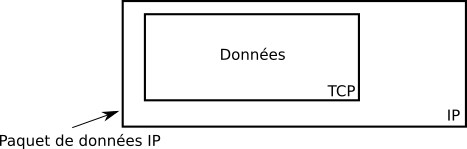
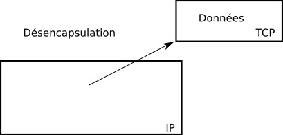
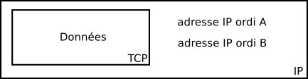
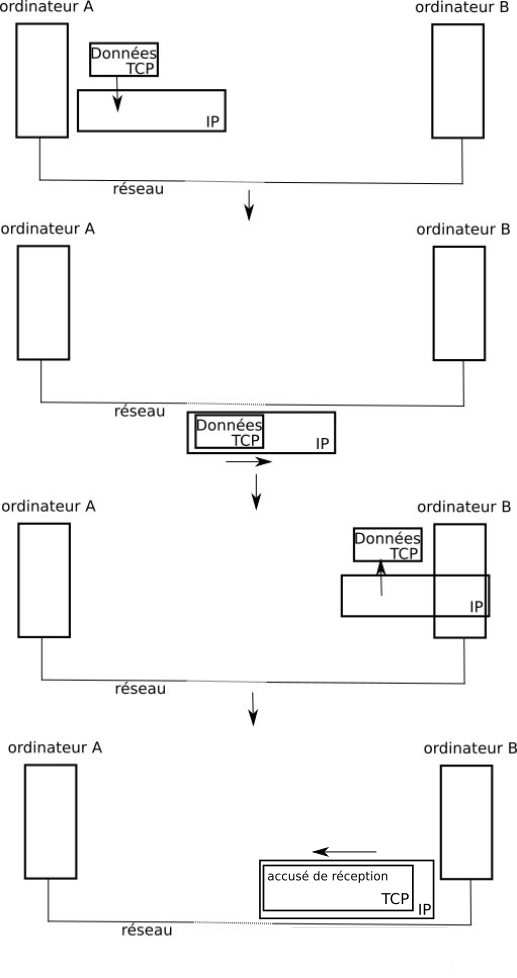

Module Internet (I)
Protocole TCP/IP
Sur internet l'échange de données entre deux ordinateurs est basé sur deux protocoles : le protocole IP et le protocole TCP. Mais qu'est-ce qu'un protocole ?
Selon Wikipedia, dans le cas général : On nomme protocole les conventions qui facilitent une communication sans faire directement partie du sujet de la communication elle-même. En électronique et en informatique (toujours selon Wikipedia) : un protocole de communication est un ensemble de contraintes permettant d'établir une communication entre deux entités (dans le cas qui nous intéresse 2 ordinateurs).
Il existe de nombreux protocoles qui permettent à deux ordinateurs de communiquer entre eux. Parmi ces nombreux protocoles, nous allons en étudier deux qui ont une importance fondamentale dans le fonctionnement d'internet : le protocole IP et le protocole TCP (d'un point de vue technique, les protocoles TCP et IP sont au coeur d'internet. Ils sont tellement liés entre eux que l'on parle souvent de protocole TCP/IP).
Quand un ordinateur A "désire" envoyer des données à un ordinateur B, après quelques opérations qui ne seront pas abordées ici, l'ordinateur A "utilise" le protocole TCP pour mettre en forme les données à envoyer.
Ensuite le protocole IP prend le relai et utilise les données mises en forme par le protocole TCP afin de créer des paquets de données. Après quelques autres opérations qui ne seront non plus évoquées ici, les paquets de données pourront commencer leur voyage sur le réseau jusqu'à l'ordinateur B. Il est important de bien comprendre que le protocole IP "encapsule" les données issues du protocole TCP afin de constituer des paquets de données

Une fois arrivées à destination (ordinateur B), les données sont "désencapsulées" : on récupère les données TCP contenues dans les paquets afin de pouvoir les utiliser.

Le protocole IP s'occupe uniquement de faire arriver à destination les paquets en utilisant l'adresse IP de l'ordinateur de destination. Les adresses IP de l'ordinateur de départ (ordinateur A) et de l'ordinateur destination (ordinateur B) sont ajoutées aux paquets de données.

Le protocole TCP permet de s'assurer qu'un paquet est bien arrivé à destination. En effet quand l'ordinateur B reçoit un paquet de données en provenance de l'ordinateur A, l'ordinateur B envoie un accusé de réception à l'ordinateur A (un peu dans le genre "OK, j'ai bien reçu le paquet"). Si l'ordinateur A ne reçoit pas cet accusé de réception en provenance de B, après un temps prédéfini, l'ordinateur A renverra le paquet de données vers l'ordinateur B.
Nous pouvons donc résumer le processus d'envoi d'un paquet de données comme suit :

À noter qu'il existe aussi le protocole UDP qui ressemble beaucoup au protocole TCP. La grande différence entre UDP et TCP est que le protocole UDP ne gère pas les accusés de réception. Les échanges de données avec UDP sont donc moins fiables qu'avec TCP (un paquet "perdu" est définitivement "perdu" et ne sera pas renvoyé) mais beaucoup plus rapides (puisqu' il n'y a pas d'accusé de réception à transmettre). UDP est donc très souvent utilisé pour les échanges de données qui doivent être rapides, mais où la perte d'un paquet de données de temps en temps n'est pas un gros problème (par exemple le streaming vidéo).
Il est très important de bien comprendre que TCP/IP repose sur la notion de paquets de données. Si par exemple on désire envoyer un fichier (son, photo, vidéo ou texte...) en utilisant TCP/IP, les données qui constituent ce fichier ne seront pas envoyées d'un seul tenant, ces données vont être "découpées" en plusieurs morceaux et chaque morceau sera envoyé dans un paquet différent. Une fois tous les paquets arrivés à destination, le fichier d'origine pourra être reconstitué. Pour aller d'un ordinateur A à un ordinateur B, les différents paquets contenant les données qui constituent notre fichier, ne passeront pas forcement par la même route (cette notion de route sera abordée plus tard), ils pourront emprunter des chemins très différents : en exagérant à peine, pour faire le trajet Paris-Los Angeles, certains paquets pourront passer par l'atlantique alors que d'autres passeront par le pacifique. Si un des paquets n'arrive pas à destination, le fichier ne pourra pas être reconstitué, le paquet "perdu" devra être renvoyé par l'émetteur (voir le système d'accusé de réception décrit ci-dessus).
Activité 2.1
Faites un résumé de cette activité